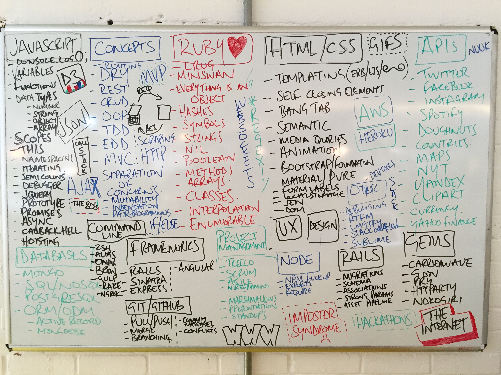

<div class="container" >

<!--  -->

  <div class="content">
  For three months I have been intensively studying full stack web development at General Assembly. At university I studied art and loved learning about building things. However I knew I never wanted to do art as a career. I started learning web development straight out of art school, whilst working as a chef. I knew for sure after several months that this is what I wanted to do and wanted that acceleration WDI offered.
  Every morning we had a Scrum and the people quickly became like family. I have learnt so much and there is so much I want to keep learning as a Web Developer. I am looking for a Junior role and am open minded about any tech I would be using. I like the MEAN stack, front end, Ruby on Rails. Basically, I’m interested in doing something of everything.
  Over the last three months I have learnt a lot about myself, I’m happy that I’m somewhere I want to be in my life. And want to keep improving my skills and growing my coding knowledge as apart of a wider tech community.
  </div>
</div>
<!-- 
<div ></div>
 -->